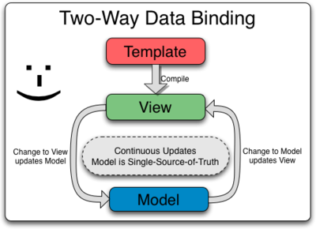
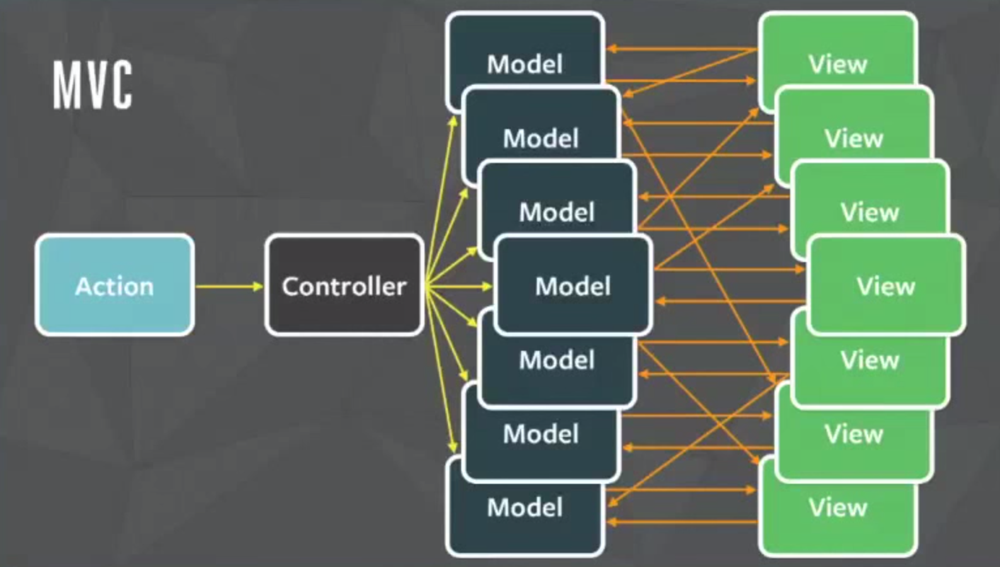

<!doctype html>
<html>
	<head>
		<meta charset="utf-8">
		<meta name="viewport" content="width=device-width, initial-scale=1.0, maximum-scale=1.0, user-scalable=no">

		<title>reveal.js</title>

		<link rel="stylesheet" href="css/reveal.css">
		<link rel="stylesheet" href="css/theme/sky.css">

		<!-- Theme used for syntax highlighting of code -->
		<link rel="stylesheet" href="lib/css/zenburn.css">

		<!-- Printing and PDF exports -->
		<script>
			var link = document.createElement( 'link' );
			link.rel = 'stylesheet';
			link.type = 'text/css';
			link.href = window.location.search.match( /print-pdf/gi ) ? 'css/print/pdf.css' : 'css/print/paper.css';
			document.getElementsByTagName( 'head' )[0].appendChild( link );
		</script>
	</head>
	<body>
		<div class="reveal">
			<div class="slides">
				<!-- 0 -->
				<section data-markdown="Some Independent Components.md" data-separator="^\r?\n---\r?\n$" data-separator-vertical="^\r?\n-\r?\n$" data-separator-notes="^Notes:" />

				<!-- <section >
					<p>Draft.js</p>
					<iframe data-src="http://localhost:3000" style="width: 95%; height: 500px;"></iframe>
				</section>

				<section >
					<p>Crop-Component</p>
					<iframe data-src="http://localhost:3000" style="width: 95%; height: 500px;"></iframe>
				</section> -->

					<!-- <aside class="notes">
						Single Source of Truth!
						流行的框架
						1. Angular - 帶領前端發展走向新格局
							Two-way-binding
								學習曲線小
								容易造成Spaghetti code
								
								
							Pooling
								大型應用時效能驟降
						2. React - 高效、組件思考
							Virtual DOM
								提供優化tree diff效率的空間
								提供React Native類專案的可能性
								學習曲線陡峭，需要對Js近年的Stack熟悉
								責任大多在開發者身上
								社群成熟度好
						3. Vue
							結合兩家所長，提供更多的整合，隱藏開發細節
					</aside> -->
				</section>

			</div>
		</div>

		<script src="lib/js/head.min.js"></script>
		<script src="js/reveal.js"></script>

		<script>
			// More info about config & dependencies:
			// - https://github.com/hakimel/reveal.js#configuration
			// - https://github.com/hakimel/reveal.js#dependencies
			Reveal.initialize({
				// 演示稿的“正常”的大小。
			  // 当演示稿被缩放时，将会适应不同的分辨率，而宽高比也将会被保留。
			  // 可以用百分比单位指定。
			  width: 960,
			  height: 700,
			  // 显示大小应该考虑到在内容的外围保留一些空白。
			  margin: 0,
				// 视差背景图片
  			// parallaxBackgroundImage: 'https://s3.amazonaws.com/hakim-static/reveal-js/reveal-parallax-1.jpg',
  			// 视差背景尺寸
  			// parallaxBackgroundSize: '2100px 900px',

				dependencies: [
					{ src: 'plugin/markdown/marked.js' },
					{ src: 'plugin/markdown/markdown.js' },
					{ src: 'plugin/notes/notes.js', async: true },
					{ src: 'plugin/highlight/highlight.js', async: true, callback: function() { hljs.initHighlightingOnLoad(); } }
				]
			});
		</script>
	</body>
</html>
